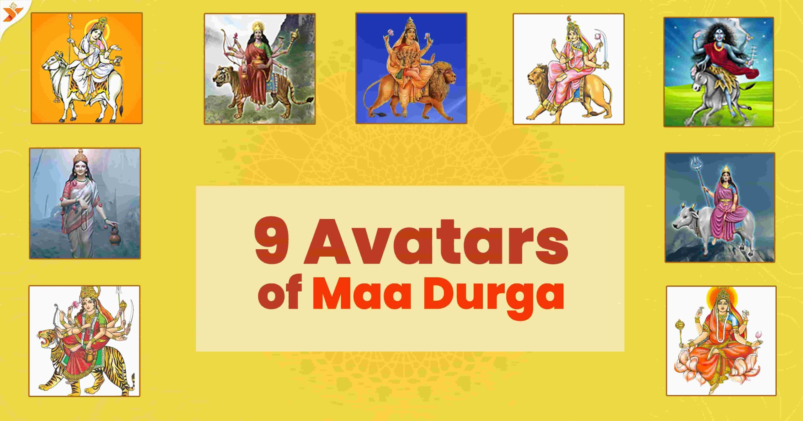
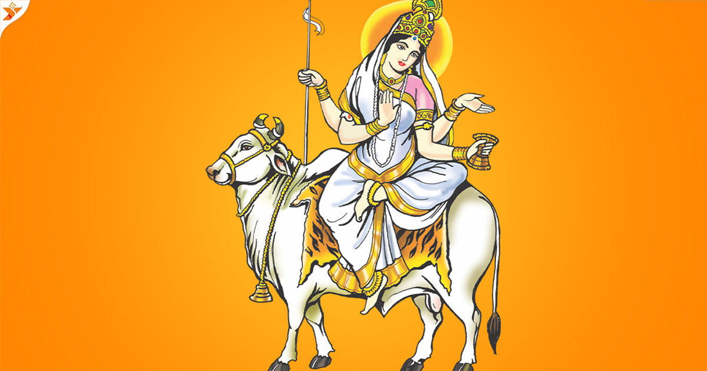
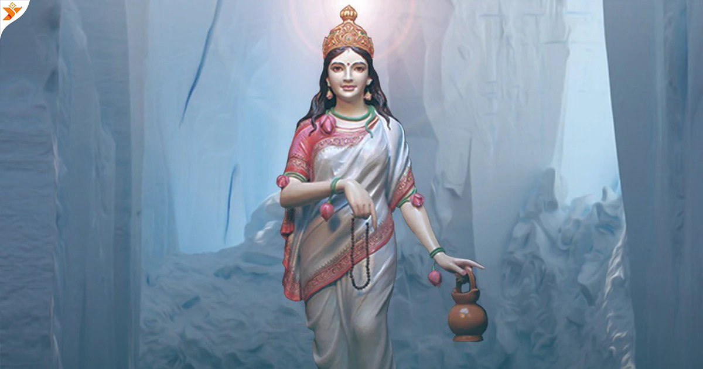
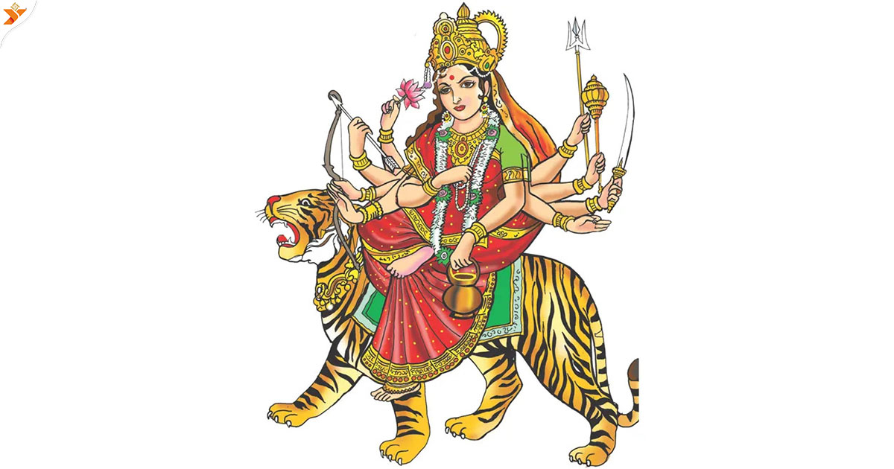
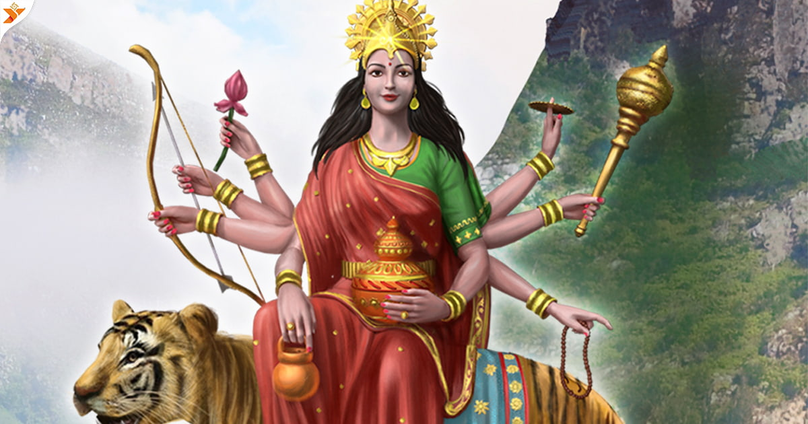
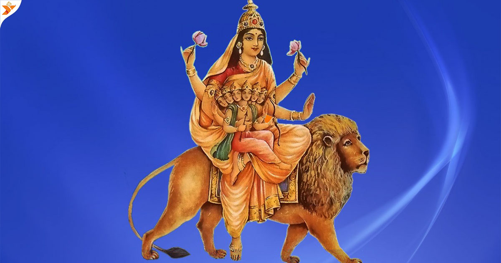
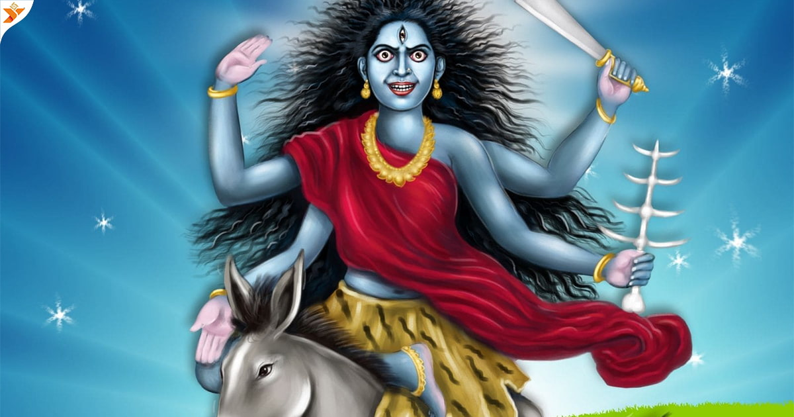
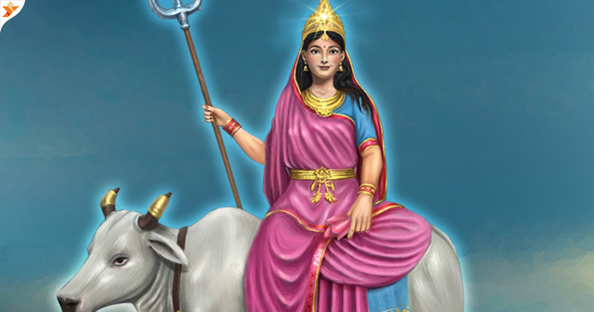
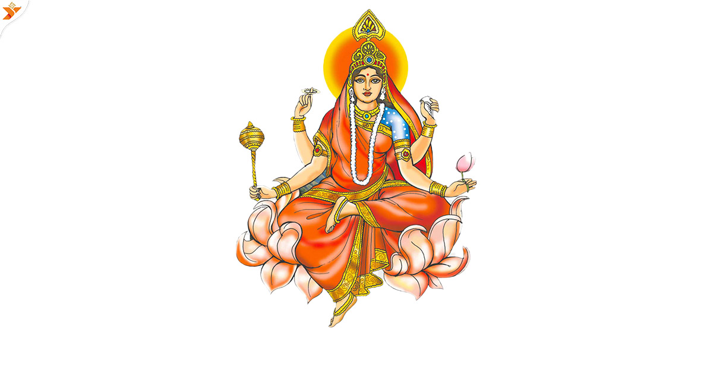

Happy
Navratri
2024
या देवी सर्वभुतेषु बुद्धिरूपेण संस्थिता । नमस्तस्यै नमस्तस्यै नमस्तस्यै नमो नमः ॥

History of Maa Durga :- Maa Durga is one of the most revered deities in Hinduism, embodying the divine feminine energy known as Shakti. Her history is rich and multifaceted, interwoven with various myths, legends, and cultural traditions that span centuries. Origins and Mythology Vedic Roots: The concept of the divine feminine can be traced back to the Vedic texts, where goddesses like Aditi and Ushas represent different aspects of femininity and power. Devi Mahatmya: One of the primary texts that narrate Durga's exploits is the "Devi Mahatmya," part of the Markandeya Purana. Here, she manifests to combat the buffalo demon Mahishasura, who symbolizes chaos and ignorance. Durga's victory over him signifies the triumph of good over evil. Navadurga: Durga is often worshipped in her nine forms known as Navadurga, each representing different attributes and aspects of life. These forms are celebrated during the festival of Navaratri, which honors her various incarnations. Iconography: Typically depicted riding a lion or tiger, Durga carries various weapons gifted by the gods, symbolizing her strength and ability to destroy evil forces. Her multi-armed form represents her capacity to multitask and protect her devotees. Cultural Significance Festivals: The most significant festival dedicated to Maa Durga is Durga Puja, especially celebrated in West Bengal and among Bengali communities worldwide. This festival commemorates her victory over Mahishasura and includes elaborate rituals, artistic idols, and community celebrations. Art and Literature: Durga has inspired countless works of art, literature, dance, and music across India and beyond. Temples dedicated to her often showcase intricate carvings and sculptures depicting her battles and divine grace. Symbol of Empowerment: In contemporary times, Maa Durga is viewed as a symbol of women's empowerment and strength. Many feminists and social movements in India draw upon her image to promote gender equality and justice. Global Influence Durga's influence extends beyond India. Her stories and representations can be found in various cultures, adapting to local beliefs while maintaining core themes of strength, protection, and the triumph of good over evil.
9 Avatars of Maa Durga
Navratri is called the festival of joy. On these nine days of Navratri, Hindus believe that the nine goddesses come and shower their blessings on all of them. Devotees fast for the nine days of Navratri. The festival is celebrated with the Garba and Dandiya nights, every Gujarati is so excited for the festival of Navratri and to play Garba.
1. Shaila Putri Devi (Daughter of Mountain)
She is the first Navdurga worshipped during the first day of Navratri and is the rebirth of Goddess Sati. Shaila Putri is the Daughter of Mountain King Himavat and is the manifestation and form of the Hindu Goddess Mahadevi, representing herself in the pure form of Goddess Parvati. It is believed that the Devi gives Shakti to attain higher spiritual growth. She is worshiped as Purna Prakriti Durga. The temple of Shaila Putri is located in Varanasi, Uttar Pradesh, India.
2. Brahmacharini Mata (Mother of Devotion and Penance)
She is the second aspect of Nav Durga’s form of Mahadevi. The Goddess is worshipped on the second day of Navratri ( the nine divine nights of Navdurga). Brahmacharini is a devoted female student living in an ashram with her Guru and other students. Maa Brahmacharini is the symbol of love and immense strength. She only desired to marry Lord Shiva. Her temple is located at the Panchganga Ghat, Ghasi Tola, Varanasi, Uttar Pradesh.
3. Chandraghanta Mata(Destroyer of Demons)
According to the Shiva Maha Purana, Chandraghanta is the ‘shakti’ of Lord Shiva in the form of Chandrashekhara. Each aspect of Shiva is accompanied by the Shakti, therefore Ardhanarishvara. It is believed that she is the goddess of spiritual and internal strength. It is said that people who face obstacles in life should worship this Goddess.
4. Kushmanda Mata (Goddess of Cosmic Egg)
Kushmanda is the Hindu Goddess who is credited with the creation of the world with her divine smile. Followers of Kalikula believe her to be the fourth aspect of Navdurga’s form of Mahadevi. Her name signals her main role: Ku means ‘a little’, Ushma means ‘warmth’ and ‘energy’, and means a ‘cosmic egg’. It is located in the Durga Kund area of Varanasi.
5. Skandamata Devi (Goddess of Motherhood and Children)
Her name comes from Skanda, an alternate god of war Kartikeya and Mata, meaning Mother. As one of the Navdurga, her worship took place on the fifth day of Navratri. Her abode is in Vishuddha Chakra. Devotees believe that Sakndamata brings fortune and luck into their lives. The colour orange signifies brightness and knowledge and is the colour of Goddess Sakndamata. It is located in Jatipur, Varanasi.
6. Katyayani Mata (Goddess of Power)

She is seen as the slayer of the cruel demon Mahisasura. She is also seen as a warrior Goddess who was able to bring peace to the world. Maa Katyayani is one of the fiercest forms of Maa Durga and is also called the Mahishasurmardini. Seated on a lion, Goddess Katyayani is depicted carrying a sword in her right and a lotus flower in her left hand. This temple is located in Mahi Sagar district, Gujarat.
7. Kalaratri (Goddess of Auspiciousness and Courage)
She is the first referenced in the Devi Mahatmya. Kalaratri is one of the fearsome forms of the Mother Goddess. Kalaratri is sometimes called (Kal Ratri). It is believed that the Goddess Chandi created another goddess from her forehead, who came to be known as Kaalratri or Kaali. Maa Kaalratri fought Chandha and Mundha and eventually killed them. Her temple is located in Varanasi, Uttar Pradesh, India.
8. Mahagauri Mata
She is worshipped on the eighth day of Navaratri. According to Hinduism, Mahagauri has the power to fulfil all the desires of her devotees. The one who worships the goddess gets relief from all the suffering in life. She carries a “Trishul” and a “Damru” in her hands. Devotees offer coconut to Goddess Mahagauri.
9. Siddhidatri Mata
Maa Siddhidatri is the ninth form of the Goddess Durga. The name “Siddhidatri” is derived from two words Siddhi which means supernatural powers and Datri which means giver. Maa Siddhidatri is also referred as the giver of supernatural powers.